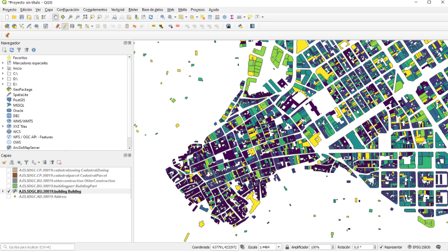

Me gustó mucho un mapa leí en el blog de Dominic Royé y que muestra la evolución urbana de Valencia. No me he podido resistir a replicarlo para mi querida perla del Segura, Cieza (Murcia).
Además de un estupendo blog dedicado a temas de clima y geografía, Dominic Royé ha escrito un libro titulado “INTRODUCCIÓN A LOS SIG CON R”, que tiene muy buena pinta, y que comentaré cuando lo tenga en la mano y lea, espero que pronto.
Hacer un mapa interactivo del municipio extrayendo los datos de catastro. Usaremos R en todo el proceso y al final mostraremos un mapa que muestra la edad de la trama urbana de la ciudad.
En el blog original de Dominic lo hace con Valencia, pero en este “cover” -versión murcianica- lo haremos de Cieza, siguiendo sus indicaciones y parte del código que nos muestra en su blog.
Puedes descargar los datos catastrales con R o hacerlo con QGIS. Para los que usamos aplicaciones de Sistemas de Información Geográfica, es más sencillo descargar la capa del municipio desde QGIS, que es el mejor programa libre para manejo de SIG.
Existe un complemento sobre QSIG llamado INSPIRE, que permite la selección interactiva de provincia y municipio para descarga de datos de Catastro. Lo que hace es descargar directamente al entorno QGIS varias capas vectoriales con diferente información de las parcelas, polígonos de edificios, calles, manzana, etc del Catastro.
vista QGIS y complemento
Una vez tenemos los datos en la aplicación QGIS, podemos pintar el mapa allí aplicando una escala apropiada y asociando la clasificación a los valores de una columna de la tabla de datos asociada. Vamos, que en esta aplicación es bastante rápido hacer este tipo de planos como veis:
 Pero hacerlo en QGIS nos limita las opciones a la hora de compartir y exportar esos datos como informe, por eso vamos a hacerlo también desde R que es mucho más flexible, pero algo más complicado de ejecutar.
Vamos a ver cómo hacer esto con R, tal y como nos dice Dominic, y lo primero es descargar la fuente de datos para eso usa la librería feedR que nos facilita la lectura de ficheros de marcado XML. Así descargamos el feed de datos de INSPIRE (=catastro) y obtenemos los enlaces de los datos por provincia:
# instalamos el paquete feedR
#devtools::install_github("datawookie/feedeR")
library(feedeR)
library(tidyverse)
url <- "http://www.catastro.minhap.es/INSPIRE/buildings/ES.SDGC.bu.atom.xml"
# importamos los RSS con enlaces por provincias
prov_enlaces <- feed.extract(url)
# Extraemos la tabla con los enlaces y limpiamos los titulos de espacios vacios
prov_enlaces_tab <- as_tibble(prov_enlaces$items) %>%
mutate(title=stringr::str_trim(title))
head(prov_enlaces_tab)## # A tibble: 6 x 5
## title date link description hash
## <chr> <dttm> <chr> <chr> <chr>
## 1 Territorial~ 2021-03-04 00:00:00 http://www.catastro.min~ "\n\n\t\t ~ d21ebb7~
## 2 Territorial~ 2021-03-04 00:00:00 http://www.catastro.min~ "\n\n\t\t ~ bdba5e1~
## 3 Territorial~ 2021-03-04 00:00:00 http://www.catastro.min~ "\n\n\t\t ~ 03bcbcc~
## 4 Territorial~ 2021-03-04 00:00:00 http://www.catastro.min~ "\n\n\t\t ~ 8a15420~
## 5 Territorial~ 2021-03-04 00:00:00 http://www.catastro.min~ "\n\n\t\t ~ 7d3fd37~
## 6 Territorial~ 2021-03-04 00:00:00 http://www.catastro.min~ "\n\n\t\t ~ 9c08741~Ahora buscamos en esta tabla el enlace de la provincia de Murcia, extraemos los enlaces municipales y descargamos los datos de Cieza que buscamos.
La función pull() sirve para seleccionar una columna determinada en una cadena pipe de tidyverse, es decir las que usamos %>%, lo que equivaldría a $ en seleccion de columnas.
# filtramos la provincia y obtenemos la url RSS que está en la columna link
# pull es lo mismo que $link en la data.frame
atom <- filter(prov_enlaces_tab, str_detect(title, "Murcia")) %>% pull(link)
# importamos la RSS de atom que nos da los enlaces municipales
enlaces <- feed.extract(atom) # ojo falla con UTF-8 en acentos
# vemos lo que contiene la tabla de municipios
head(enlaces$items)## # A tibble: 6 x 5
## title date link description hash
## <chr> <dttm> <chr> <chr> <chr>
## 1 " 30001-ABA~ 2021-03-03 00:00:00 http://www.catastro.minh~ "\n\n\t\t ~ 59a4d7~
## 2 " 30002-ABA~ 2021-03-03 00:00:00 http://www.catastro.minh~ "\n\n\t\t ~ a8ccae~
## 3 " 30003-AGU~ 2021-03-03 00:00:00 http://www.catastro.minh~ "\n\n\t\t ~ 94cd3f~
## 4 " 30004-ALB~ 2021-03-03 00:00:00 http://www.catastro.minh~ "\n\n\t\t ~ a66434~
## 5 " 30005-ALC~ 2021-03-03 00:00:00 http://www.catastro.minh~ "\n\n\t\t ~ 780f4e~
## 6 " 30006-ALE~ 2021-03-03 00:00:00 http://www.catastro.minh~ "\n\n\t\t ~ 008acc~# Obtenemos la tabla con los enlaces de descarga
enlaces_tab <- enlaces$items
# esto es solo si falla al importar UTF-8
#val_enlaces_tab <- mutate(val_enlaces_tab, title = repair_encoding(title),
# link = repair_encoding(link))
# filtramos la tabla con el nombre de la ciudad
link <- filter(enlaces_tab, str_detect(title, "CIEZA")) %>% pull(link)
# este sería el enlace final:
link## [1] "http://www.catastro.minhap.es/INSPIRE/Buildings/30/30019-CIEZA/A.ES.SDGC.BU.30019.zip"Con el código anterior hemos obtenido el enlace de descarga de los datos municipales del catastro de Cieza http://www.catastro.minhap.es/INSPIRE/Buildings/30/30019-CIEZA/A.ES.SDGC.BU.30019.zip.
Ahora tenemos que descargar datos espaciales que contiene el .zip en el directorio de trabajo. Anotar que la función URLencode() nos vale para codificar correctamente una dirección URL que contiene caracteres especiales (no es el caso, pero bueno).
# creamos un archivo temporal
temp <- tempfile()
# descargamos los datos a ese fichero
download.file(URLencode(link), temp)
# descomprimimos a una carpeta llamada capas
unzip(temp, exdir = "capas")Hemos descomprimido el zip del enlace en un directorio llamado capas, por lo que ahora tenemos 5 ficheros con datos espaciales. El que nos interesa es el denominado buildings.gml.
Para importar los datos utilizaremos la función dir_ls(ruta) del paquete fs que hace lo mismo que dir(ruta,full.names = T) de RBase, pero nos permite añadir un argumento de busqueda tipo expresion regular (regexp: expresión regular) por lo que en una línea obtenemos el nombre y rura del fichero.
Aplicamos después la función st_read() del paquete sf que lee capas espaciales (kml, shp…), entre ellas está el formato Geography Markup Language (GML) que es el tipo del fichero que nos interesa hoy.
library(fs) # manejo de ficheros fs
# obtenemos la ruta con el archivo
file <- dir_ls("buildings", regexp = "building.gml")
# Leemos los datos espaciales en R
edificios <- st_read(file)
#nombres de las columnas de datos
names(edificios)Ya tenemos los datos en R como capa espacial, ahora tenemos que arreglar los datos y extraer información.
La columan beginning contiene la fecha de construcción del edificio, pero en formato texto (chr). Debemos leer estos datos y transformarlos en formato Date con ymd_hms() de lubridate y transformar a Date() ya que las horas y minutos poco importan.
Los registros con fecha desconocida, viene como “–01-01T00:00:00” lo que no corresponde a ninguna fecha reconocible. Por eso, reemplazamos el primer “-” por “0000”.
# cargo los datos para no hacer tanta operacion en linea
#load('radio25.RData')
load('images/radio25.RData')library(stringr) # manejo de palabras y textos
# Cambiar nombre y convertir a fecha
edificios <- mutate(edificios,
beginning = str_replace(beginning, "^-", "0000") %>%
ymd_hms() %>% as_date()
)Con esto tenemos los datos preparados para su representación. La variable edificios es una capa geográfica (objeto sf con data.frame asociada).
Antes de pintar el mapa, Dominic nos propone una gráfica en la que veremos los periodos de expansión y contracción de la edificación municipal. Usaremos el paquete ggplot2 con la geometría de geom_density() para este objetivo. Yo he añadido la plantilla cowplot que me gusta y simplificado algunas opciones.
library(cowplot)
library(tidyverse)
#limitamos al periodo posterior a 1799
filter(edificios, beginning >= "1799-01-01") %>%
ggplot(aes(beginning)) +
# geom_histogram(aes(y=..density..), colour="black", fill="white", alpha=0.5,position="identity") +
geom_density(fill = "#2166ac", alpha = 0.7) +
# quito la notación científica que no me gusta aquí
scale_y_continuous(labels=function(n){format(n, scientific = FALSE)})+
scale_x_date(date_breaks = "10 year",
date_labels = "%Y") + # muestra solo el año en la etiqueta
theme_cowplot(8)+ # aplico la plantilla cowplot 8
# finalmente añado algunas lineas para marcar picos de construcción
labs(y = "",x = "", title = "Evolución del desarrollo urbano en Cieza")+
geom_vline(aes(xintercept=as.Date("1900-01-01")),linetype="dashed")+
geom_vline(aes(xintercept=as.Date("1930-01-01")),linetype="dashed")+
geom_vline(aes(xintercept=as.Date("1975-01-01")),linetype="dashed") +
geom_vline(aes(xintercept=as.Date("1989-01-01")),linetype="dashed") +
geom_vline(aes(xintercept=as.Date("2001-01-01")),linetype="dashed")Evolucion urbana en Cieza
Para poder visualizar el centro de la población, y por limitaciones de la web, en nuestro caso, limitamos el mapa a un radio de 1 km desde el centro de la ciudad. Usamos la función geocode_OSM() del paquete tmaptools para obtener las coordenadas del punto central de Cieza en clase sf. Después proyectamos este punto al sistema de coordenadas de la capa de catastro que es la (EPSG:25830).
Como último paso creamos con la función st_buffer() un buffer con 1000 m y la intersección con nuestros datos de los edificios. También es posible crear un buffer en forma de un rectángulo indicando el tipo de estilo con el argumento endCapStyle = "SQUARE".
# obtenemos las coordinadas de Valencia
ciudad_point <- tmaptools::geocode_OSM("Cieza,Murcia", as.sf = TRUE)
# proyectamos los datos
ciudad_point <- st_transform(ciudad_point, 25830)
# creamos un buffer
point_bf <- st_buffer(ciudad_point, 2500)
# projected CRS: ETRS89 / UTM zone 30N
# obtenemos la intersección entre el buffer y la edificación
# originalmente eran 2,5 km de ahí el nombre
radio25 <- st_intersection(edificios, point_bf)
#añadimos un nuevo campo o columna con el año de la edificación
radio25 <- mutate(radio25, year = year(beginning))Quedan un par de cosas, aquí he cambiado cosas respecto al blog original, pues quiero representar el mapa en forma interactiva con leaflet, que usa el sistema de coordenadas de EPSG:4326, por lo que hay que reproyectar.
También he cambiado el modo de hacer la escala de color, usaremos la función colorNumeric de leaflet sobre una paleta creada con el paquete RColorBrewer.
Este es el resultado final, espero que os guste y no dejeis de ver el blog de Dominic Royé del que sacamos la idea y código.
library(sf)
# cargamos Leaflet
library(leaflet)
# transformamos el sistema de referencia
map_cieza<-st_transform(radio25,crs=4326)
# creo escala de 5 colores con
col_spec <- RColorBrewer::brewer.pal(5, "Spectral")
qpal <- colorNumeric(col_spec, map_cieza$year)
# como no hay apenas información anterior a 1900
map_cieza$year[map_cieza$year<1900]<-1900
# añado una columna para popup del mapa
map_cieza %>% mutate(popup_info=paste(sep = "<br/>", paste0("<b>","<i>", year,"<i>", "</b>"), currentUse)) %>%
mutate(lon=ifelse(is.na(lon), address.lon, lon),
lat=ifelse(is.na(lat), address.lat, lat)) %>%
filter(!is.na(lon) & !grepl("CLOSED", year)) ->map_cieza
# Pintamos el Mapa final en leaflet
leaflet(map_cieza) %>%
addProviderTiles(providers$Stamen.TonerLite) %>%
addPolygons(data = map_cieza,
stroke = F,
fill = TRUE,
color = ~qpal(year),
fillOpacity = 0.8,
popup = ~popup_info) %>%
addLegend("bottomright", pal = qpal, values = ~year,
title = "Antiguedad edificacion",
opacity = 1)Espero que os guste este mapa, saludos.